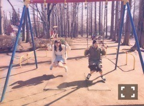

| 2016/07 06 Wed | 斎藤ちはる 昔のオフショット達。(´>∀<｀)ゝ |
ちはるーむへようこそ( ◦˙ ˙◦ )
今日は昔の写真を漁ってみようかな♡
昔のオフショット！！
これから気が向いたときに
昔のオフショットも随時公開していくね\( ˆoˆ )/
これは高3の夏に、
川後、一実、愛未、まひろ、まあやの
チームチューリップで夢の国に行った時。
この日、みんなでお揃いで
ツインテールにしたんだよね(﹡ˆ ˆ﹡)
朝からみんなでツインテール！
若いなあ。元気だなあ。
これいつだろう
高2の冬とかかな？？
美彩、優里、ひめ！！
美彩が髪の毛短い\( ˆ ˆ )/懐かしい！
この写真見せたら、ルージュ愛未に
口の色がない！って怒られるんだろうな...
これは埼玉ウォーカーの表紙撮影のときのオフショット！！
私がなにかしてるのを
さゆと真夏が見守って笑ってる写真。
何してたんだろう...
歌ってたのかな...笑

これも同じく埼玉ウォーカーのときの！！
琴子と一緒にブランコ乗ったんだ♡
この時はまだ琴子固い顔してるけど
じょしらくがあったから
今はもう笑ってくれるよ(*´ω`*)
去年のCUTiEの撮影のときの写真！
赤を基調としたメイクがお気に入り♡
この時の写真お気に入りまだあるから
また載せるね〜♪
メイクとかファッションが大好きだから
本当に楽しかった\( ˆ ˆ )/
今日はここまで！！
内容がほぼほぼないけど...
昔の写真だけど...
喜んでくれたら嬉しいな♡♡
皆さんからのこんな写真撮って！
のリクエストも達成せねば！！
よし！
フラ語の勉強してくる！(｡･o･｡)ﾉ
斎藤ちはる